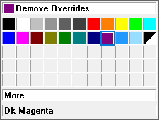

Reference a point cloud file
You can reference the scanned image in a point cloud file to verify fit, measure, and orientation of equipment, piping or electrical systems, or of a structural frames assembly within a large-scale building, facility, site, or environment. The point cloud file is not stored on disk.
You can adjust the point color of different areas, and you can choose the density of points to display to improve performance as you rotate, pan, or move the scanned image.
-
In an assembly document, choose the Tools tab→Assistants group→Reference Point Cloud command
 .
. The initial Reference Point Cloud command bar is displayed.
-
In the Open File dialog box, set the search filter to All Point Cloud Documents (*.pts,*.ptx,*.asc,*.xyz,*.las,*.stl,*.ply,*.rcs,*.rcp), and then browse to and open a point cloud file.
Note:Due to their size and impact on performance, store your point cloud files locally, not on a network shared drive.
-
On the Reference Point Cloud command bar, do the following:
-
From the Density list, select the point density to use. The default is Maximum, which means 100% of the points are displayed.
To reduce the number of points in the point cloud and to improve performance when you manipulate it, you can select any of the following:
-
Medium—50% density
-
Low—25% density
-
Minimum—10% density or 10 million points (whichever is less)
-
-
You can use the Size list to change the size of the points in the point cloud, from Automatic, which calculates the optimal number of pixels given the specified density, to a value from 1 to 10.
A smaller point size produces a crisper image. As the point size increases, details are blurrier.
-
Click the Color button to select and apply a single override color for the point cloud display. To define a custom color, click More on the color palette.

If the point cloud file contains no color information, all points are displayed in gray.
-
Click Accept to continue.
-
The default name of the point cloud is the file you opened. You can edit the name if needed, and then click Finish.
The point cloud is zoomed and displayed at the center of the base coordinate system.

The newly created point cloud file is listed in PathFinder, in the Point Clouds collector. Hover over the point cloud item to display its name, the file path, the file size, and the number of points.
Example:
-
-
Manipulate the point cloud by doing any of the following:
-
Resolve the point cloud detail—Select any of the standard Solid Edge zoom, pan, and rotate commands.
-
Move a point cloud—In PathFinder, right-click the point cloud file and choose the
 Move Point Cloud command.
Move Point Cloud command. -
Select these commands on the Inspect tab→3D Measure group to measure from model geometry to points within the point cloud, or from point to point within the point cloud itself: 3D Measure, Measure Distance, Measure Angle, and Inquire Element.
-
You can reopen the command bar to reference another point cloud file in the assembly, or to change the point cloud color, point density, or point size for this point cloud. For more information, see Edit a point cloud.